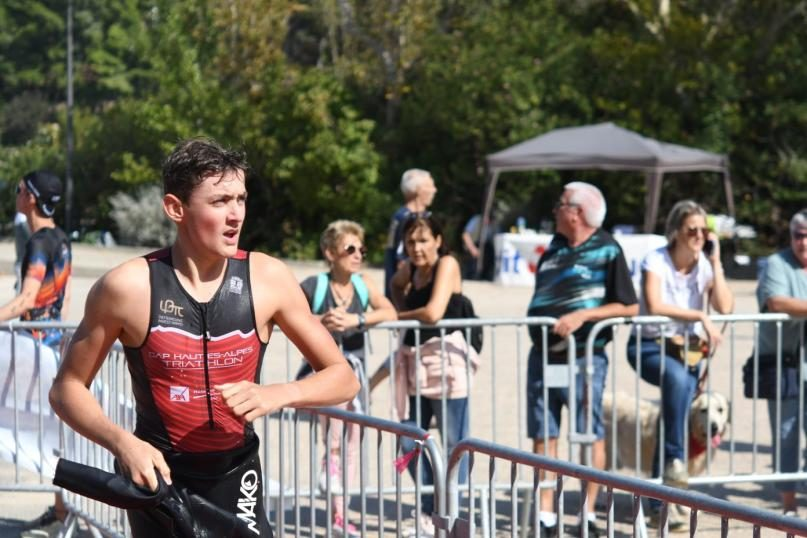
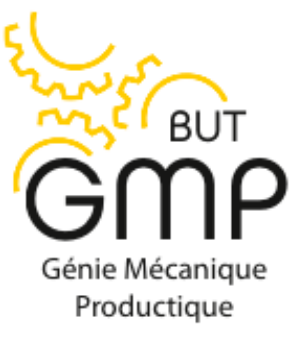

Mon parcours
Du handball en sport-études à l'IUT d'Aix-en-Provence : un parcours construit autour de la science, du sport et de l'effort.
Le handball, puis la STI2D
Jeune alpin passionné de science et de sport, je me suis dirigé dès le collège vers une section sportive spécialisée dans le handball. J'y ai appris l'esprit d'équipe, et à accepter l'échec.
Suite à cela, je me suis orienté vers la STI2D.
L'internat et le triathlon
J'ai intégré l'internat du lycée Pierre-Gilles de Gennes. Durant cette période, j'ai développé une vraie autonomie de travail, étant seul dans ma chambre d'internat.
À côté de cela, je continuais mon parcours sportif vers le triathlon, un sport qui m'attirait pour sa rigueur et sa résilience. Ce sport a créé en moi une envie de me dépasser et d'être meilleur de jour en jour.

Le bac, mention Bien
J'ai fini ma terminale en décrochant mon bac avec la mention Bien, et une place dans l'université qui était mon choix de cœur : l'IUT d'Aix-en-Provence.
BUT 2 Génie Mécanique et Productique
Je réalise aujourd'hui ma deuxième année de BUT, où j'apprends à développer et dimensionner des projets d'ingénierie.

Trois projets, trois étapes
La pince à canette. J'y ai appris à développer la gestion d'équipe et à développer mes capacités en mécanique.
La transformation d'un VTT en Solex, à partir d'une roue d'hoverboard. Pendant mon projet de terminale, j'ai travaillé sur la chaîne mécanique et sur le code Arduino. Cela m'a initié à la mécanique et au prototypage rapide, et m'a donné le goût de continuer en génie mécanique.
L'embase en fonte. En SAÉ, j'ai appris à penser une pièce pour qu'elle puisse se mouler.